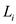
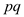
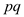
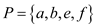
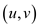

MAX-CUT Problem
MAX-CUT problem is the problem in which the vertices of an
undirected graph are
partitioned into two parts such that the total weight cut edges are
more than any other cut for the same graph. Weight is a
positive value which is associated with each edge of the graph.
are
partitioned into two parts such that the total weight cut edges are
more than any other cut for the same graph. Weight is a
positive value which is associated with each edge of the graph.
For example: Consider the graph G (V,
E), the vertices of which are partitioned into two parts
andsuch
that .
.
In the above graph, for each edgeand of cut the
vertices and. The weight
of cut iswhich is the
greater than the weight of any other possible cut of the graph.
of cut the
vertices and. The weight
of cut iswhich is the
greater than the weight of any other possible cut of the graph.
Now, for the graph G (V, E), proving that a MAX-CUT problem is a randomized 2 approximation algorithm. Randomized approximation algorithms are used for the generation of approximate solutions for the optimization problems. The solutions of randomized algorithm are not of very good quality as they give the average solutions. There are two possible methods that can be used for proving any problem to be the randomized 2 approximation algorithm.
a. De-randomization using conditional expectations.
b. De-randomization using pair-wise independent hashing
a. De-randomization using conditional expectations:
For a graph G (V, E) in which there are
n labels available for vertices, the randomized algorithm
designates a random variable uniformly
fromto each
vertex i with the equal probability  . The cut of
the graph is denoted by.
. The cut of
the graph is denoted by.
Assume that there are  number of
edges in the cut which is the function of assigned random
variables. Now for
each edge of designate
each edge to be 1 if
number of
edges in the cut which is the function of assigned random
variables. Now for
each edge of designate
each edge to be 1 if
 andare
different otherwise set it as 0.
andare
different otherwise set it as 0.
Since, it is adequate that for a partial assignmentthen it will be very easy to calculate the conditional expectation which is. It is true for each edgefrom the linearity of expectation.
Now, for the conditional expectation there are three cases that should be considered as:
1. If there is no value assigned to variable and
for
vertices u and v then the conditional expectation of
the edge will
be.
2. If only one variable inand
is
assigned the value for the edge e the conditional
expectation will also
be.
3. If both the variableand have a value assigned then the conditional expectation will be 1 if the values of and are different, otherwise it will be 0.
b. De-randomization using pairwise independent hashing:
Pairwise independence means that the probabilistic decisions for
a pair of vertices will be independent of each other. The property
used here from the randomized algorithm is that for every pair of
vertices u, v the probability that u and
v can implement different decision is. This
property could be achieved using only independent
random coin tosses; it cannot be achieved using n
independent random coin tosses.
Proof for MAX-CUT problem to be a randomized 2 approximation algorithm can be done by any of the above methods.
De-randomization using pairwise independent hashing method:
Consider refers to the fieldunder the operation of addition and multiplication modulo 2. Assigning value to each vertex a distance vector in the vector space, our choice of approves that the vector space should allot unique element to each vertex. Now, assume thatr be a uniform random vector in, divide all the vertex sets into following subsets:
For any edge, the probability that is equal to the probability that is nonzero. For any non zero vector that is fixed , here is because the set of r satisfying is a linear subspace of of dimension , so total of the all possible vectors r have zero dot product with wand rest of them have non zero product with w.
So, if there is a sample thoroughly at random, the expected weight of partitions defined by is at least half the weight of the maximum cut. The vector space has only vectors with itself, which proves to be a deterministic option to our randomized algorithm.
Else than selecting r at random, finding out the weight of the cut for each
And select the cut which have maximum weight. This is at least as good as selecting r at random.
Therefore, maximum cut problem is a deterministic
2-approximation algorithm with the cost incurred at the running
time with factor of .
.
Linear Programming
Linear programming is a way of achieving the maximum possible outcome from a set of resources that are represented as an integrated mathematical design. In the technical terms the linear programming is a way to achieve optimum results from the linear programming problems. This optimization is subject to a few constraints.
In the single-source shortest-path issue, a shortest path can be found from source vertex s to all the vertices which are present in the graph. In order to do this, for each and every vertex from the considered vertex, the linear programming strategy can be a good choice in which linear equations are formed from the concerned graph.
Standard form of linear program: In a standard form there
is a set of p real numbers that are , another
set of q real numbers that are
, another
set of q real numbers that are and a set
ofreal numbers
that are
and a set
ofreal numbers
that are where,
where,


Now, the objective is to find p real numbers such
that
such
that
Maximize
 … … (1)
… … (1)
And that is subject to
 … … (2)
… … (2)
 …… (3)
…… (3)
The first expression is called the objective function. The second and the third expression show the constraints. This way a linear program can be put into the standard form.
Vertex-Cover: For an undirected graph the vertex cover is
define as the set of vertices that can cover all of the edges of
the concerned graph. Consider the graph  the subset
P of vertex set V is the group of vertices that can
cover all the edges
the subset
P of vertex set V is the group of vertices that can
cover all the edges in the graph
that is either the edgeis connected
to vertex a or it is adjacent to the vertex b.
in the graph
that is either the edgeis connected
to vertex a or it is adjacent to the vertex b.
For example: Consider the graph where
.

In the above graph the red colored vertices are covering the
edges of graph G that is vertex cover . The size
of vertex cover is the total amount of vertices in the vertex cover
set. For the above graph the size of vertex cover is 4.
. The size
of vertex cover is the total amount of vertices in the vertex cover
set. For the above graph the size of vertex cover is 4.
The vertex cover is called as minimum vertex cover if it contains the minimum number of vertices to cover entire set of edges of the graph that is no more vertices are required.
For example: The minimum cover for the above graph isthe graph is shown below:

The vertex cover of minimum size is also known as optimal vertex cover.
Now, consider the linear-programming relaxation whichis a
linear programming of approximating weighted vertex cover. Consider
an undirected graph G = (V, E) in which
 has
an associated positive weight w(v).
has
an associated positive weight w(v).
Now, for any vertex cover. Define the weight of the vertex cover.
To get the vertex cover of least possible weight .Below mention linear program is the
relaxation version for vertex cover of least weight. It is formed from the 0-1 integer program for getting a minimum weight vertex cover. If the constraint remove from 0-1 integer and replace it by.
After replacement, the linear programming version formed is known as linear programming relaxation. Any viable solution of 0-1 integer program in section 35.4, equations (35.14–35.16) is also viable solution to the linear program in equations (35.17–35.20).
Due to this, optimal solution of the linear program gives the lower limit on the value of an optimal solution to the 0-1 linear program, and thus a lower limit on the optimal weight in the minimum-weight vertex cover problem.
Relaxation version of linear programming for minimum weight vertex cover problem is as:
Minimize
… … (35.17)
Subject to
for each
 … … (35.18)
… … (35.18)
For each … …
(35.19)
 For each … …
(35.20)
For each … …
(35.20)
To show that if line (35.19) is removed, from above
program, still there is optimal solution that must satisfy
for
each. To solve
the above linear program in polynomial time, assume that  is an
optimal solution to the above linear program. For the optimization
of the program, removing the constraint asked in the problem.
is an
optimal solution to the above linear program. For the optimization
of the program, removing the constraint asked in the problem.
Round every value to the nearest integer,
Set
If
If
Now, finding the set corresponding to solution x’. The
set P still is a vertex cover; because of every edge
it
is correct that and minimum
one of or
should
be minimum ½ and therefore one of u or v will belong
to P, which is still satisfying the condition of equation
(35.17). The above explanations say that, in a vertex cover
and imagine any edge.
Now, according to the constraint (35.18) . This illustrates that at least one ofand is at least (1/2).
Therefore, at least one of u and v is containedin the vertex cover. This means that every edge is covered.
And according to 0-1 linear program, write the constraint that for any edge (u, v), at least one of u and v must be in the vertex cover as.
Hence, it can be said that after removing constraint in equation
(35.19) do not make any sense if these are removed from
linear program, would get the optimal solution which would be
for
each.